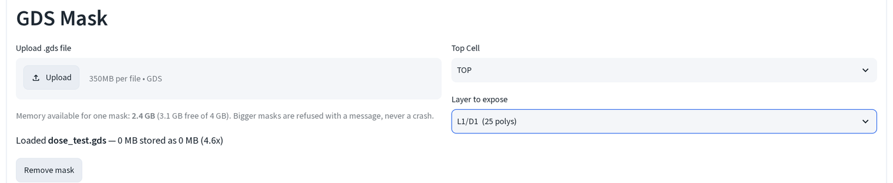
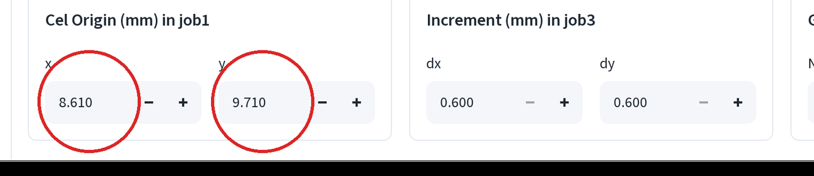
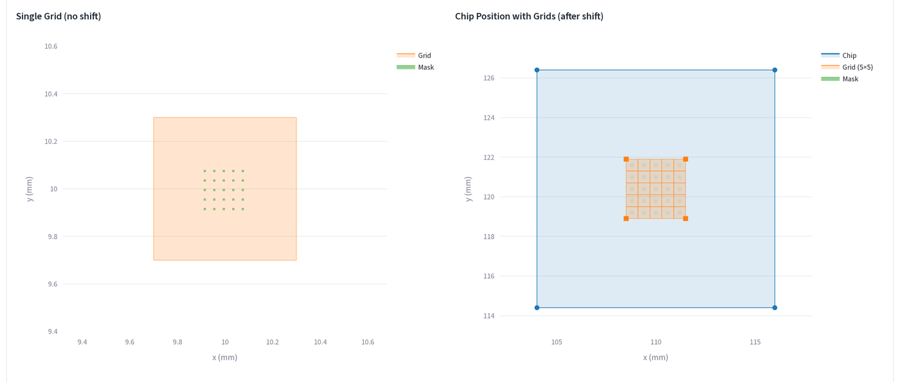
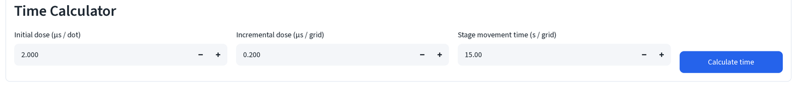
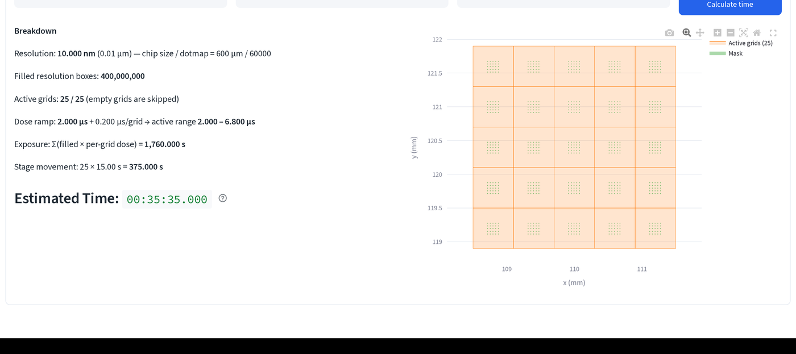

劑量時間測試¶
在同一顆晶片上以一系列劑量曝光同一個圖案，再從 SEM 下讀出顯影後的線寬，藉此
在真正對元件下手前挑出可用的劑量。本頁走一遍 劑量時間測試 (Dose Time
Testing) 模式，使用範例檔 dose_test.gds，一個 5×5 的測試區塊陣列，
間距 40 μm，每個區塊內有一個 8×8 μm 焊墊與三條線（寬度 0.5、1.0、2.0 μm）。
如果你還沒開過這個頁面，請先讀電子束微影計算機基礎；本頁是從 已載入遮罩之後接著講。
1. 載入遮罩並選圖層¶
- 上傳
dose_test.gds，然後把 要曝光的圖層 (Layer to expose) 設為L1/D1（25 個多邊形），也就是區塊焊墊。

這個範例檔把焊墊（datatype 1）與線（datatype 2）分別放在不同的
datatype 上，所以一次只能曝光一種。以下走一遍焊墊的流程；線的做法完全
相同，只要改選 L1/D2。
2. 把圖案定位在寫入場中¶
- 在 曝光流程 (Workflow) 底下選 劑量時間測試 (Dose Time Testing)。
在這裡輸入 job1 中的 Cel 原點 (mm) (Cel Origin (mm) in job1) 的 x
與 y。這是遮罩 GDS 座標
(0,0)對應到的實際載台位置。

此檔案中的區塊陣列位於 GDS 座標 x = 1300, 1480 μm、y = 200, 380 μm （離檔案自身原點很遠；它與二次曝光所用對準標記共用 同一個座標系統）。若把 Cel Origin 留在自動算出的預設值，陣列就會完全落在 單一寫入場區塊之外，永遠不會被曝光。上面這組數值（8.610、9.710）把陣列 移到區塊置中的位置，這就是你自己的遮罩該遵循的做法：先從 GDS 遮罩檢視器 讀出圖案的邊界框，再據此設定 Cel Origin，讓它落在區塊之內。
3. 網格幾何參數維持預設值¶
- job3 中的增量 (mm) (Increment (mm) in job3)（dx、dy）與 job3 中的 網格數量 (Grid Count in job3)（Nx、Ny）不需要更改，dx/dy 會自動跟隨 晶片尺寸讓區塊緊密相接，而預設的 5×5 數量正好對應這個範例的劑量階數。 job3 中的初始位移 (mm) (Initial Shift (mm) in job3) 會自動算出以將 陣列置中於晶片上；同樣不要更動。

左圖是在你剛設定的 Cel Origin 上的單一區塊，沒有複製，先在這裡確認遮罩落在 橘色框內。右圖是自動置中位移後，整個晶片上的完整 5×5 陣列。
4. 設定劑量遞增¶
- 在 曝光時間計算 (Time Calculator) 底下，讓 初始劑量 (μs / dot) (Initial dose (μs / dot))、增量劑量 (μs / grid) (Incremental dose (μs / grid)) 與 載台移動時間 (s / grid) (Stage movement time (s / grid)) 維持預設值（2.000、0.200、15.00），然後按 計算時間 (Calculate time)。

25 個區塊各自有自己的劑量：第 k 個區塊（依網格迭代順序，x 為外層、y 為
內層）得到 2.000 + k × 0.200 μs/dot。第 0 個區塊劑量最低，第 24 個最高，
這正是劑量測試需要的遞增。
5. 讀出每個劑量階的曝光時間¶

要看的是 劑量遞增 (Dose ramp) 這一行：2.000 μs + 0.200 μs/grid → 有效範圍
2.000, 6.800 μs，也就是 25 個區塊依迭代順序實際用到的最低與最高單區塊劑量。已填入解析度方格數 (Filled resolution boxes)
（此處為 400,000,000）只是全部 25 個區塊在 10 nm 像素下的原始格數，數字大
是因為解析度精細，不是需要處理的問題。底部的 預估時間 (Estimated Time)
（00:35:35.000）就是要寫上工作單的數字，見工作編號表看這些
數字各自對應到 JEOL 系統中的哪個欄位。